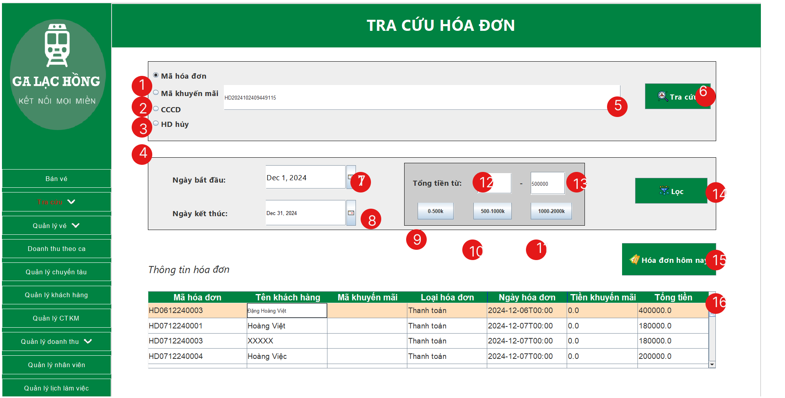
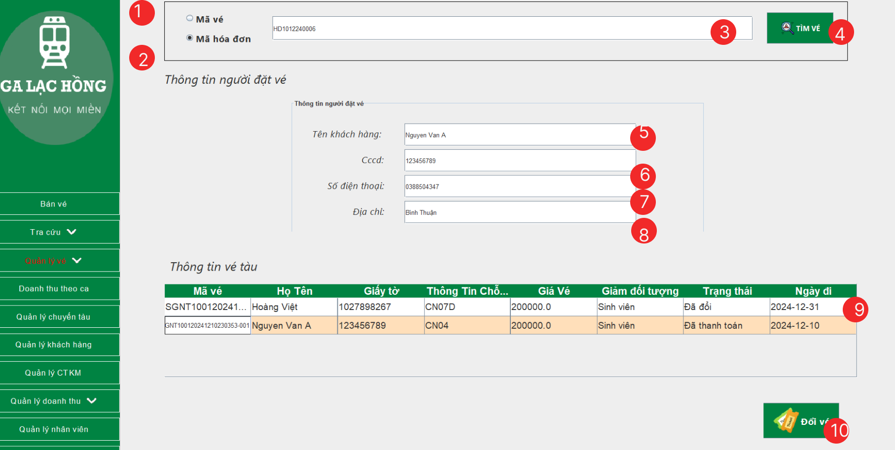
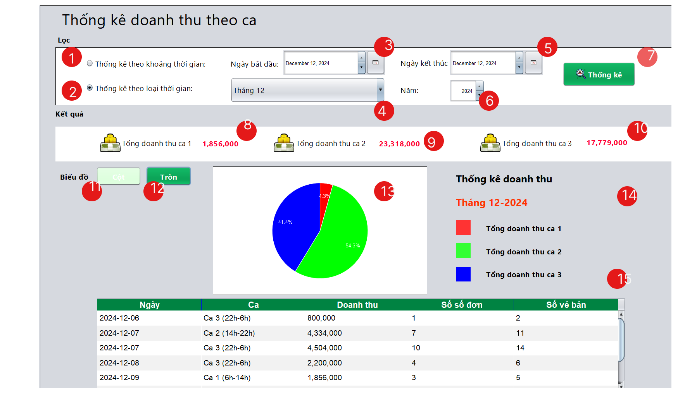
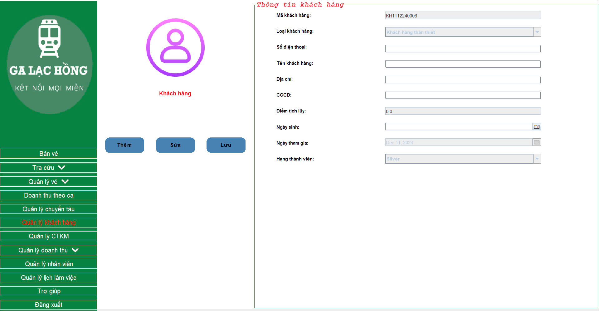
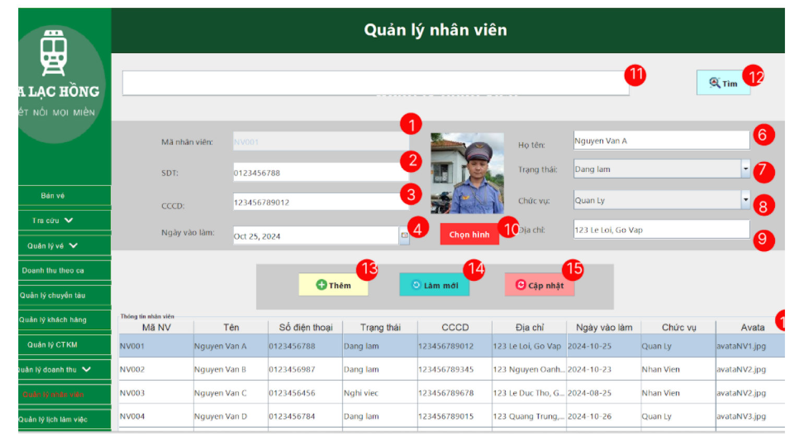
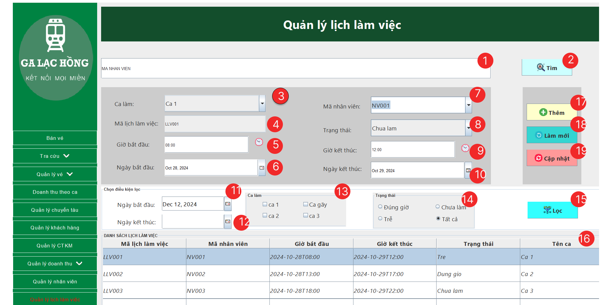

Hướng Dẫn Sử Dụng
1. Đăng nhập

- Cho phép người dùng nhập vào tài khoản của mình
- Cho phép người dùng nhập vào mật khẩu
- Khi nhập xong tài khoản và mật khẩu, người dùng chọn "Đăng nhập" để vào hệ thống
- Nếu quên mật khẩu, người dùng chọn "Quên mật khẩu" để có thể lấy lại mật khẩu
- Người dùng nhập lại email lúc đăng ký tài khoản để được nhận lại mật khẩu
- Sau khi nhập xong email, người dùng nhấn nút “OK” để hệ thống gửi mật khẩu qua email
- Cho phép người dùng thoát khỏi giao diện nhập email và quay lại đăng nhập
2. Màn hình Bán vé

- Khi click vào sẽ hiện ra giao diện bán vé.
- Khi click vào sẽ hiện ra menu con chứa các giao diện tra cứu theo các chi tiết cụ thể.
- Khi click vào sẽ hiện ra menu con chứa giao diện đổi vé và trả vé.
- Khi click vào sẽ hiện ra giao diện Thống kê doanh thu theo ca của nhân viên đã đăng nhập.
- Khi click vào sẽ hiện giao diện quản lý chuyến tàu.
- Khi click vào sẽ hiện ra giao diện Quản lý khách hàng.
- Khi click vào sẽ hiện ra giao diện Quản lý Chương trình khuyến mại.
- Khi click vào sẽ hiện ra menu con chứa các giao diện Thống kê doanh thu theo các tiêu chí cụ thể.
- Khi click vào sẽ hiển thị ra giao diện quản lý nhân viên.
- Khi click vào sẽ hiển thị ra giao diện quản lý lịch làm việc.
Các bước để tìm tàu theo yêu cầu ga đi, ga đến, ngày đi ngày đến:
- Chọn loại vé “Một chiều”.
- Chọn loại vé “Khứ hồi”.
- Sau khi chọn loại vé đi thì sẽ điền các thông tin như Ga đi.
- Điền thông tin Ga mà bạn muốn đến.
- Nếu chọn loại vé “Một chiều” thì sẽ chọn ngày mà khách hàng muốn đi.
- Nếu chọn loại vé “Khứ hồi” thì sẽ có thêm chọn ngày mà khách muốn về.
- Sau khi đã điền đầy đủ thông tin, nhấn nút “Tìm Chuyến” để tìm chuyến tàu.
Các bước để thêm chỗ ngồi vào giỏ vé:
- Chọn chuyến tàu khách hàng muốn đi.
- Chọn toa khách hàng muốn đi.
- Danh sách chỗ ngồi của toa tàu sẽ hiện ra. Màu trắng là chỗ chưa đặt, màu đỏ là chỗ đã được đặt. Khi chọn chỗ chưa đặt thì chỗ ngồi sẽ chuyển sang màu vàng và thông tin chỗ ngồi sẽ được hiển thị lên giỏ vé.
- Nếu muốn xóa chỗ ngồi cần đặt: Nhấn vào biểu tượng thùng rác của vé tương ứng trong giỏ vé.
- Sau khi chọn chỗ ngồi theo yêu cầu khách hàng, nhấn nút “Tiếp theo” để chuyển sang màn hình thanh toán.
Các chức năng khác:
- Cho phép người dùng click vào sẽ hiện trang web hướng dẫn sử dụng.
- Cho phép người dùng đăng xuất khỏi tài khoản.
3. Màn hình thanh toán

- Cho phép người dùng nhập họ tên người đi của vé.
- Cho phép người dùng chọn đối tượng đi.
- Cho phép người dùng nhập Căn cước công dân của người đi.
- Cho phép người dùng click vào để chọn loại khách hàng.
- Cho phép người dùng click vào để nhập mã khuyến mại.
- Cho phép người dùng click vào để áp dụng mã khuyến mại.
- Cho phép người dùng click vào để nhập họ tên của người mua vé.
- Cho phép người dùng click vào để nhập Căn cước công dân của người mua vé.
- Cho phép người dùng click vào để nhập số điện thoại người mua vé.
- Cho phép người dùng click vào để nhập địa chỉ người mua vé.
- Cho phép người dùng click vào để nhập số tiền khách đưa.
- Sau khi nhập số tiền khách đưa thì click vào nút để tính được tiền thừa.
- Cho phép người dùng click vào để xem chi tiết hóa đơn trước khi thanh toán.
- Cho phép người dùng thanh toán.
- Cho phép người dùng in hóa đơn dạng PDF.
- Cho phép người dùng in vé dạng PDF.
- Cho phép người dùng gửi vé qua email.
4. Màn hình tra cứu
Cho phép người dùng thực hiện các chức năng như:
4.1. Tra cứu vé

Tìm Nhanh:
- Chọn tiêu chí tìm theo mã vé.
- Chọn tiêu chí tìm theo giấy tờ.
- Chọn tiêu chí tìm theo họ tên người đi.
- Sau khi chọn tiêu chí, người dùng nhập thông tin cần tìm vào.
- Sau đó nhấn nút tìm vé.
- Ngoài ra, có thể tìm nhanh bằng cách quét mã QR.
Tìm theo Chi tiết:
- Cho phép người dùng nhập tên khách hàng.
- Cho phép người dùng chọn đối tượng.
- Cho phép người dùng nhập giấy tờ.
- Cho phép người dùng nhập ngày đi.
- Cho phép người dùng nhập mã chỗ ngồi.
- Sau khi điền tất cả thông tin, nhấn nút tìm vé để tìm kiếm thông tin khách hàng.
Trường hợp khách hàng chỉ nhớ tên và khoản thời gian đi:
- Cho phép người dùng nhập họ tên của khách hàng cần tìm lại vé.
- Nhập khoảng thời gian từ.
- Nhập khoảng thời gian đến.
- Sau khi điền đầy đủ thông tin, nhấn nút lọc để lọc theo họ tên và khoảng thời gian mua vé.
Thông tin hiển thị lên bảng.
- Cho phép người dùng chọn hàng cần xem chi tiết để hiển thị lên “Chi tiết vé”.
- Cho phép người dùng in lại vé trên giao diện “Chi tiết vé” ở góc phải giao diện tra cứu vé.
4.2. Tra cứu khuyến mại
- Chọn đối tượng áp dụng (khách hàng thường, khách hàng thân thiết).
- Chọn thời gian CTKM khả dụng.
- Nhấn nút lọc.
- Hệ thống hiển thị những CTKM thỏa điều kiện.
4.3. Tra cứu hóa đơn
- Radio button mã hóa đơn cho phép người dùng chọn tiêu chí tra cứu theo mã hóa đơn.
- Radio button mã khuyến mãi cho phép người dùng chọn tiêu chí tra cứu theo mã khuyến mãi.
- Radio button căn cước công dân cho phép người dùng chọn tiêu chí tra cứu theo căn cước công dân.
- Radio button hóa đơn hủy cho phép người dùng lọc ra các hóa đơn hủy.
- Cho phép người dùng nhập vào dữ liệu cần thiết để tra cứu theo các tiêu chí.
- Nút tra cứu, dùng để tìm kiếm hóa đơn dựa trên các thông tin được chọn theo tiêu chí.
- Bộ chọn ngày để lọc hóa đơn theo khoảng thời gian (ngày bắt đầu).
- Bộ chọn ngày để lọc hóa đơn theo khoảng thời gian (ngày kết thúc).
- Button để lọc hóa đơn theo giá trị tối đa và tối thiểu của hóa đơn trong khoảng giá từ 0-500k.
- Button để lọc hóa đơn theo giá trị tối đa và tối thiểu của hóa đơn trong khoảng giá từ 500k-1 triệu.
- Button để lọc hóa đơn theo giá trị tối đa và tối thiểu của hóa đơn trong khoảng giá từ 1 triệu đến 2 triệu.
- Các trường nhập liệu để lọc hóa đơn theo giá trị tối thiểu của hóa đơn.
- Các trường nhập liệu để lọc hóa đơn theo giá trị tối đa của hóa đơn.
- Nút lọc hóa đơn, sử dụng để lọc danh sách hóa đơn dựa trên các tiêu chí nhất định (theo ngày, theo tổng tiền của hóa đơn).
- Nút hiển thị hóa đơn trong ngày. Khi nhấn, có thể hiển thị danh sách các hóa đơn được tạo ra trong ngày hiện tại.
- Bảng để hiển thị chi tiết thông tin hóa đơn tra cứu được.
4.4. Tra cứu tuyến
4.5. Tra cứu lịch trình tàu
5. Màn hình quản lý vé
5.1. Đổi vé
- Radio button mã vé: Cho phép người dùng chọn phương thức tìm kiếm theo mã vé.
- Radio button mã hóa đơn: Cho phép người dùng chọn phương thức tìm kiếm theo mã hóa đơn.
- Cho phép nhập mã hóa đơn hoặc mã vé để tìm được thông tin vé cần đổi.
- Nút tìm vé, giúp người dùng tìm vé theo các tiêu chí đã chọn (như mã vé, mã hóa đơn, ...).
- Hiển thị thông tin tên của khách hàng mua vé.
- Hiển thị thông tin căn cước công dân của khách hàng mua vé.
- Hiển thị thông tin số điện thoại của khách hàng mua vé.
- Hiển thị thông tin địa chỉ của khách hàng mua vé.
- Bảng cho phép người dùng chọn 1 vé để đổi.
- Nút để thực hiện thao tác đổi vé. Người dùng sẽ nhấn vào nút này để tiến hành đổi vé cho khách hàng. Sau đó sẽ hiện sang màn hình đặt để có thể tiến hành đổi 1 vé mới.
5.2. Trả vé
6. Doanh thu theo ca
- Nút radio để quản lý trạng thái chọn lựa thống kê theo khoảng thời gian.
- Nút radio để quản lý trạng thái chọn lựa thống kê theo loại thời gian.
- Thành phần chọn ngày (ngày bắt đầu) để chọn ngày bắt đầu thống kê.
- Combobox chứa danh sách các lựa chọn liên quan đến thời gian (tháng, hôm nay, hôm qua).
- Thành phần chọn ngày (ngày kết thúc) để chọn ngày kết thúc thống kê.
- Thành phần chọn năm cần thống kê.
- Nút bấm để thực hiện thống kê theo các tiêu chí đã chọn.
- Hiển thị tổng doanh thu ca 1 theo điều kiện đã chọn.
- Hiển thị tổng doanh thu ca 2 theo điều kiện đã chọn.
- Hiển thị tổng doanh thu ca 3 theo điều kiện đã chọn.
- Nút bấm để hiển thị biểu đồ cột thể hiện doanh thu ca của ngày theo thời gian chọn.
- Nút bấm để hiển thị biểu đồ tròn thể hiện doanh thu ca của ngày theo thời gian chọn.
- Biểu đồ tròn thể hiện tổng doanh thu theo thời gian chọn.
- Thể hiện thời gian bạn đã chọn để thống kê doanh thu.
- Bảng thể hiện chi tiết nội dung bạn cần thống kê.
- Biểu đồ cột thể hiện doanh thu ca của ngày theo thời gian chọn.
7. Quản lý chuyến tàu
8. Quản lý khách hàng
Cho phép tìm kiếm, thêm mới một khách hàng cũng như cập nhật thông tin của khách hàng.
8.1. Chức năng thêm khách hàng

- Chọn nút thêm (mã khách hàng sẽ được tạo tự động)
-
Điền các thông tin như:
-
Số điện thoại:
- Phải bắt đầu từ 03 và có 10 chữ số.
- Nếu sai, hệ thống sẽ báo lỗi.
-
Tên khách hàng:
- Không được để trống.
- Nếu để trống, hệ thống sẽ báo lỗi.
-
Địa chỉ:
- Không được để trống.
- Nếu để trống, hệ thống sẽ báo lỗi.
-
CCCD:
- Phải gồm 12 chữ số.
- Nếu sai, hệ thống sẽ báo lỗi.
-
Điểm tích lũy:
- Mặc định là 0, không được phép chỉnh sửa.
- Điểm sẽ tăng thông qua quá trình mua vé.
-
Ngày sinh:
- Không được để trống và phải sau ngày hiện tại.
- Nếu sai, hệ thống sẽ báo lỗi.
-
Ngày tham gia:
- Mặc định là ngày khi thêm khách hàng vào hệ thống.
-
Hạng thành viên:
- Sẽ được gán dựa vào số điểm tích lũy.
-
Số điện thoại:
- Nhấn lưu, nếu thông tin hợp lệ, hệ thống sẽ thông báo lưu thành công.

8.2. Chức năng tìm kiếm khách hàng
Sau khi khách hàng đã được lưu trong hệ thống, thực hiện:
- Nhập SDT đã đăng kí vào ô số điện thoại

- Nhấn enter
- Thông tin khách hàng được hiển thị (không được phép chỉnh sửa)

8.3. Chức năng cập nhật lại thông tin khách hàng
Sau khi tìm kiếm, thông tin khách hàng đã hiển thị, thực hiện:
- Nhấn sửa.
-
Thực hiện việc điền thông tin mới ở các ô:
-
Mã khách hàng:
- Mặc định không thể sửa đổi.
-
SDT:
- Có thể sửa đổi.
-
Tên khách hàng:
- Có thể sửa đổi.
-
Địa chỉ:
- Có thể sửa đổi.
-
CCCD:
- Có thể sửa đổi.
-
Ngày sinh:
- Có thể sửa đổi.
-
Điểm tích lũy:
- Không thể sửa đổi.
-
Ngày tham gia:
- Không thể sửa đổi.
-
Hạng thành viên:
- Không thể sửa đổi.
-
Mã khách hàng:
- Nhấn lưu.
- Nếu dữ liệu cập nhật hợp lệ, hệ thống sẽ thông báo cập nhật khách hàng thành công.

Kiểm tra lại dữ liệu sau khi cập nhật bằng cách tìm kiếm lại khách hàng đó

9. Quản lý chương trình khuyến mại

Cho phép người dùng thực hiện tìm kiếm một CTKM dựa vào thời gian áp dụng, thêm mới một CTKM, chỉnh sửa thông tin của một CTKM, đồng thời xem được danh sách các hóa đơn và CTKM được áp dụng trong hóa đơn đó, cũng như số tiền được giảm.
9.1. Chức năng thêm thông tin chương trình khuyến mãi
- Nhấn nút thêm.
- Form thêm CTKM hiện lên.

- Thực hiện điền các thông tin:
- Mã CTKM: Được tạo tự động.
- Thời gian bắt đầu: Phải từ ngày hiện tại trở về sau.
- Thời gian kết thúc: Phải lớn hơn hoặc bằng (đối với các CTKM áp dụng trong ngày) thời gian bắt đầu.
- Nội dung KM: Không được để trống.
- Chiết khấu: Phải là số và lớn hơn 0.
- Đối tượng áp dụng: Không được để trống.

- Nhấn luu
- Nếu thông tin hợp lệ, hệ thống hiển thị thêm thành công

- Nhấn làm mới để xem CTKM đã thêm

9.2. Chức năng cập nhật thông tin chương trình khuyến mãi
- Chọn một CTKM có sẵn
- Nhấn sửa

- Form sửa CTKM hiện lên, cho phép thực hiện thay đổi các thông tin cần thiết.
- Nhấn nút "Lưu" để cập nhật thông tin.
- Nếu thông tin cập nhật hợp lệ, hệ thống sẽ hiển thị thông báo "Cập nhật thành công".

- Nhấn làm mới để xem CTKM đã cập nhật
9.3. Chức năng tìm kiếm khuyến mãi
- Chọn một ngày áp dụng để lọc các chương trình khuyến mãi.
- Nhấn nút "Lọc" để thực hiện tìm kiếm.
- Hệ thống sẽ hiển thị các CTKM có thời gian áp dụng nằm trong phạm vi ngày đã chọn.
10. Quản lý doanh thu
Cho phép người dùng thực hiện:
10.1. Chức năng thống kê số lượng vé.
- Chọn ngày bắt đầu và ngày kết thúc cho khoảng thời gian thống kê.
- Nhấn nút "Thống kê" để thực hiện thống kê số lượng vé bán ra.
- Hệ thống sẽ hiển thị số lượng vé bán ra theo từng ngày từ ngày bắt đầu đến ngày kết thúc.
- Hệ thống sẽ hiển thị ngày bán được số lượng vé nhiều nhất và ít nhất.
10.2. Chức năng thống kê tỉ lệ đổi trả vé

- Cho phép người dùng chọn tiêu chí để thống kê theo tháng.
- Cho phép người dùng chọn tiêu chí để thống kê theo năm.
- Cho phép người dùng chọn thời gian theo tháng từ tháng bắt đầu.
- Cho phép người dùng chọn thời gian theo tháng đến tháng kết thúc.
- Cho phép người dùng chọn năm (có thể là năm để thống kê theo tháng hoặc năm bắt đầu để thống kê theo năm).
- Cho phép người dùng chọn năm kết thúc.
- Sau khi chọn các tiêu chí để thống kê, người dùng nhấn nút "Thống kê" để tiến hành thống kê.
- Cho phép người dùng xuất báo cáo bằng file Excel.
10.3. Chức năng thống kê khách hàng.
- Chọn một khoảng thời gian (hôm nay, hôm qua, tuần này, tháng này, tháng trước, năm nay, năm trước).
- Nhấn nút "Tổng quan" để thực hiện thống kê.
- Hệ thống sẽ chỉ hiển thị số lượng khách hàng phát sinh giao dịch trong thời gian đã chọn.

- Nhấn chi tiết: hệ thống sẽ hiển thị số lượng khách hàng và số lượng hóa đơn trong thời gian đã chọn

10.4. Chức năng thống kê doanh thu bán vé.
11. Quản lý nhân viên
- Mã nhân viên sẽ tự phát sinh khi người dùng thêm nhân viên mới vào hệ thống.
- Số điện thoại nhân viên được người dùng nhập vào.
- CCCD nhân viên được người dùng nhập vào.
- Ngày vào làm được người dùng chọn.
- Cho phép người dùng thêm vào tất cả các thông tin của nhân viên mới vào hệ thống.
- Tên nhân viên được người dùng nhập vào.
- Trạng thái nhân viên được thể hiện trên comboBox.
- Chức vụ nhân viên được thể hiện trên comboBox.
- Địa chỉ được người dùng nhập vào.
- Hình ảnh của nhân viên được người dùng đưa vào hệ thống theo ảnh mà nhân viên cấp.
- Mã nhân viên được nhập vào để tìm kiếm nhân viên.
- Cho phép người dùng tìm kiếm thông tin nhân viên trong hệ thống.
- Cho phép người dùng thêm thông tin nhân viên vào hệ thống.
- Cho phép người dùng làm mới thông tin tìm kiếm nhân viên.
- Cho phép người dùng cập nhật thông tin tìm kiếm nhân viên.
- Bảng thể hiện thông tin chi tiết nhân viên tìm được trong hệ thống.
12. Quản lý lịch làm việc của nhân viên.
- Cho phép người dùng nhập mã nhân viên để tìm kiếm.
- Nút tìm kiếm lịch làm việc, dùng để tìm kiếm ca làm việc theo mã nhân viên.
- Combobox chọn ca làm việc (Ca 1, Ca 2, Ca 3), giúp lựa chọn ca làm việc.
- Mã lịch làm việc sẽ tự phát sinh khi người dùng thêm lịch làm việc mới vào hệ thống.
- Bộ chọn ngày cho phép người dùng chọn giờ bắt đầu.
- Bộ chọn ngày cho phép người dùng chọn ngày bắt đầu.
- Combobox chọn nhân viên, cho phép chọn nhân viên để gán lịch làm việc.
- Combobox chọn trạng thái, giúp lọc các lịch làm việc theo trạng thái (chưa làm, làm xong, trễ giờ,...).
- Bộ chọn ngày cho phép người dùng chọn giờ kết thúc.
- Bộ chọn ngày cho phép người dùng chọn ngày kết thúc.
- Bộ chọn ngày cho phép người dùng chọn ngày đầu để lọc.
- Bộ chọn ngày cho phép người dùng chọn ngày kết thúc để lọc.
- Cho phép người dùng chọn ca làm để lọc.
- Cho phép người dùng chọn trạng thái để lọc.
- Nút lọc, sử dụng để lọc dữ liệu theo các tiêu chí như ca làm việc, trạng thái, ngày bắt đầu hoặc kết thúc.
- Bảng hiện chi tiết thông tin lịch làm việc.
- Nút thêm, sử dụng để thêm một ca làm việc mới vào hệ thống.
- Nút làm mới, có thể sử dụng để làm mới dữ liệu hoặc giao diện (làm mới các thông tin về lịch làm việc).
- Nút sửa lịch làm việc, cho phép người dùng chỉnh sửa các thông tin của một ca làm việc hiện có.